채팅 앱과 하네스는 뭐가 달라요?
쇼츠를 올릴 때마다 같은 질문이 달려서, 이 팀이 쓰는 도구를 처음 시작할 때 필요한 것만 한 영상에 모았어요. 소개에 앞서 원칙부터 밝혀요. 요즘 AI로 대충 찍어 낸 게임이 쏟아지지만, 이 팀은 새 아이디어를 만들 때 AI를 도구로 쓸 뿐이라고 해요.
저희 원칙은 하나예요. AI는 도구로 쓴다.
— 영상 00:33
ChatGPT와 Codex는 뭐가 달라요?
가장 많이 헷갈리는 질문이에요. 아래 표에서 가운데 OpenAI 줄을 보면 채팅 앱 ChatGPT와 일하는 앱 Codex가 같은 회사에 있고, 맨 아래 모델 칸도 GPT-6 Astra · Sol · Luna로 같아요. 오른쪽 노란 테두리는 Anthropic 쪽인데 구조가 똑같아요. 채팅은 Claude, 일하는 앱은 Claude Code, 모델은 Opus · Sonnet · Haiku예요.
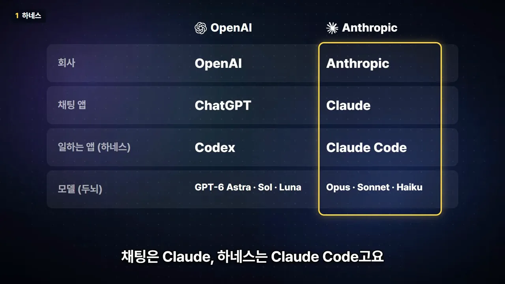
그러니 차이는 두뇌가 아니라 일하는 방식이에요. 채팅 앱은 물어보면 답만 주고, 그 코드를 내 프로젝트에 복사해 넣는 건 사람이 해요. 하네스는 내 컴퓨터의 프로젝트 폴더에 들어와서 파일을 직접 열고 고치고, 게임을 돌려서 에러까지 확인해요. 아래 그림은 영상이 말로 설명한 두 흐름을 나란히 그린 거예요.
영상은 이렇게 AI에 손발을 달아 주는 프로그램을 하네스라고 불러요. 게임을 만들 거라면 하네스 쪽이 훨씬 편하다는 게 결론이에요.
Claude Code와 Codex, 규칙 파일과 MCP
이 팀은 Codex와 Claude Code를 둘 다 쓰지만 메인은 Claude Code예요. 일을 길게 맡겨도 흐름을 잘 놓치지 않고 코드도 꼼꼼하게 짠다는 이유예요.
어떤 플랜과 모델을 고를까요
본격적으로 만들 거면 월 100달러짜리 플랜부터 권해요. 제일 싼 플랜으로 하루 작업하면 금방 사용량이 막힌대요. 화면의 요금 카드를 보면 Claude는 Pro가 월 17달러(연간 결제, 월 결제는 20달러), Claude Code를 넉넉히 쓰는 Max가 100달러부터예요. ChatGPT도 Plus 20달러, Codex를 넉넉히 쓰는 Pro가 100달러부터라 두 회사 가격대가 비슷해요.
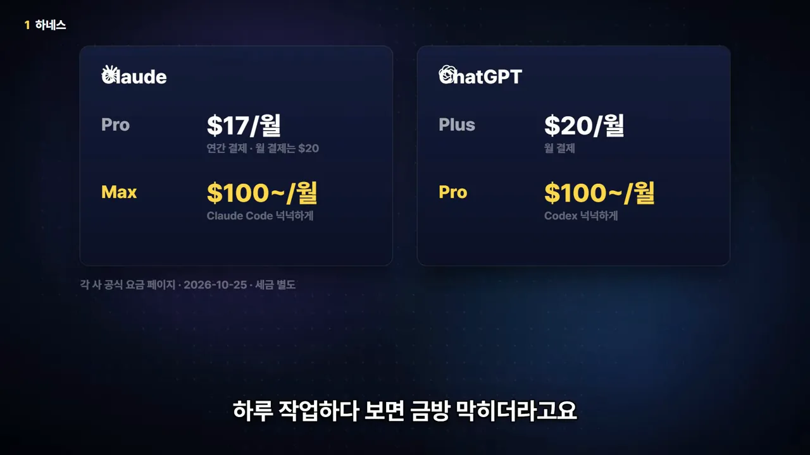
모델은 지금 기준으로 Opus 5.5가 가장 나았대요. 게임도 제일 잘 만들고, 쓰는 양에 비해 결과가 좋다고 해요. 다만 새 모델이 나올 때마다 판이 바뀌니 그때그때 다시 확인하라고 덧붙여요.
Claude는 그림을 못 그려요
Claude에는 이미지 생성 기능이 아예 없어요. Claude만 구독한다면 그림 만들 서비스가 하나 더 있어야 해요. 일반 그림은 ChatGPT나 Gemini, Midjourney에서 뽑고, 도트나 3D는 전용 서비스를 써요(마지막 섹션).
그래서 이 팀은 Codex를 같이 써요. 코드도 짜고 그 안에서 그림까지 뽑을 수 있거든요. 아래는 Codex의 모델 선택 화면이에요. 맨 위 GPT-6-Astra가 노란 테두리로 강조돼 있는데, 성능은 가장 좋지만 이것만 쓰면 사용량이 빨리 닳고 그림을 뽑으면 더 빨리 닳아요. 그래서 평소엔 가운데 GPT-6.1-Sol을 쓰고, 잘 안 풀리는 문제만 Astra에게 넘겨요.
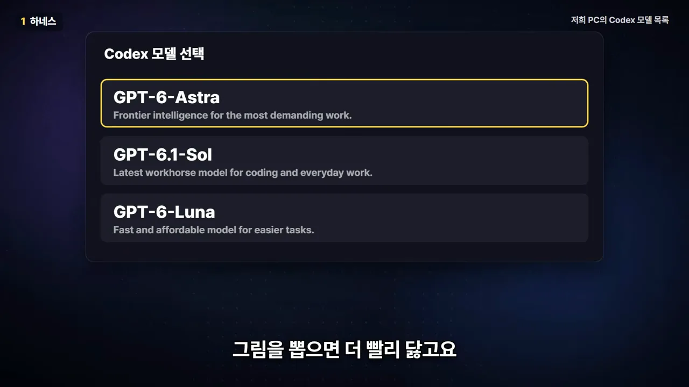
Google Antigravity 같은 다른 도구도 있지만, 지금은 Claude와 ChatGPT 쪽이 확실히 앞서 있다고 보고 넘어가요.
규칙 파일은 꼭 만들어 두세요
하네스를 쓴다면 프로젝트 폴더에 규칙 파일을 하나 두래요. AI가 일을 시작할 때마다 그걸 먼저 읽거든요. 화면의 AGENTS.md에는 네 가지 규칙이 있고, 노랗게 칠한 두 줄이 영상이 소리 내어 읽은 규칙이에요. 1번은 묻지 않고 코딩하지 말 것, 3번은 기본 테스트만으로 '완료'라고 하지 말고 직접 실행해서 화면을 보라는 거예요.
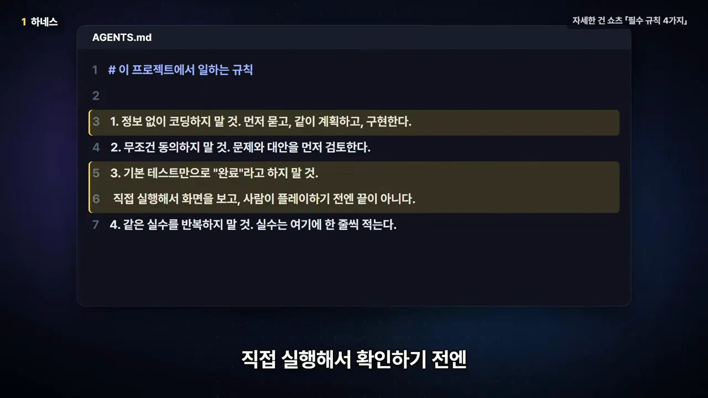
MCP는 AI에 꽂는 플러그예요
하네스 얘기에 꼭 따라 나오는 게 MCP(Model Context Protocol)예요. AI에 다른 프로그램을 꽂는 플러그라고 보면 돼요. 꽂으면 AI가 Blender를 직접 만지고 게임 엔진 에디터도 움직여요. 영상은 올해 Unity, Unreal, Blender가 모두 공식 MCP를 냈다고 해요. 아래는 Blender 쪽 공식 페이지예요. 노란 상자는 MCP 서버가 AI가 만든 코드를 안전장치 없이 실행한다는 보안 경고예요.
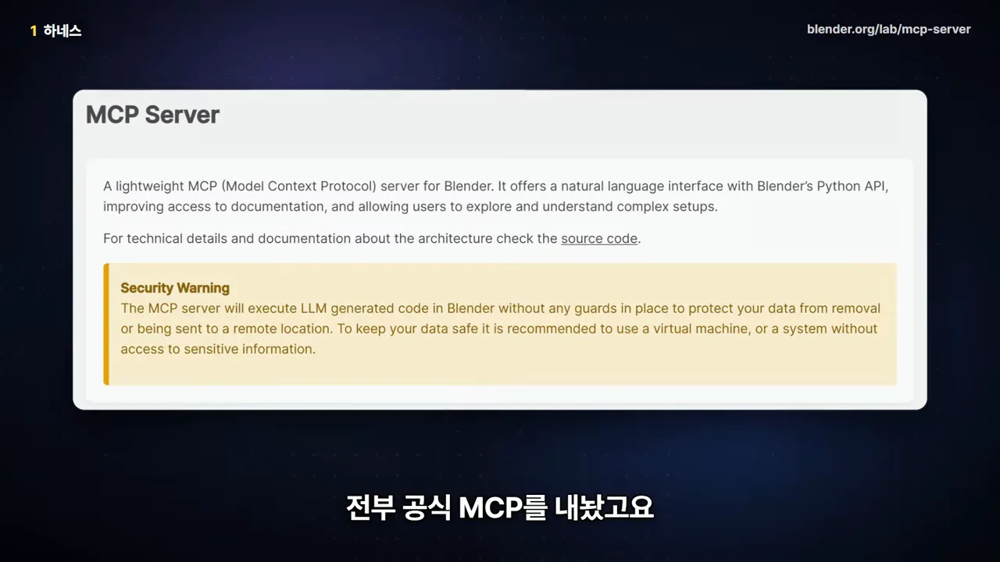
게임 엔진은 꼭 필요할까요? 그리고 Git
엔진이 없어도 게임은 만들어져요
게임 엔진은 사실 꼭 있어야 하는 건 아니래요. JavaScript 같은 언어로만 짜도 게임은 충분히 만들어지고, AI가 가장 많이 본 언어도 JavaScript라서 이런 코드는 정말 잘 짜요. 영상은 예로 세 게임을 들어요. Vampire Survivors는 처음에 JavaScript로 만들었다가 콘솔로 가면서 Unity로 옮겼고, CrossCode와 Cookie Clicker도 JavaScript 게임이에요.
엔진 셋을 비교하면
게임이 커지면 엔진을 쓰는 게 더 편해요. 영상이 말한 세 엔진의 특징을 표로 모았어요.
| 엔진 | AI와 쓰기 좋은 점 | 아쉬운 점 | 이 팀의 선택 |
|---|---|---|---|
| Godot | 쉬운 GDScript, 장면이 글자 파일, 명령어로 실행·확인, 무료에 로열티 없음 | — | 메인으로 써요 |
| Unity | 쓸 수 있는 에셋이 압도적으로 많음, 올해 공식 MCP 출시, 명령어로 테스트 | — | 좋은 선택이래요 |
| Unreal | 그래픽이 정말 좋음 | 프로젝트 용량이 크고, 블루프린트처럼 화면에서 짜는 부분이 많음 | 둘이 시작하기엔 무거웠대요 |
Godot이 AI와 잘 맞는 이유는 아래 화면에 그대로 보여요. 캐릭터 장면인 player.tscn이 사람이 읽을 수 있는 글자 파일이라, 초록 줄처럼 충돌 크기를 8.0에서 12.0으로 바꾸는 일을 AI가 바로 할 수 있어요. 맨 아래 줄은 화면 없이(--headless) 테스트를 돌려 PASS를 받는 명령이에요. AI가 고친 뒤 직접 돌려 확인까지 하는 거죠.
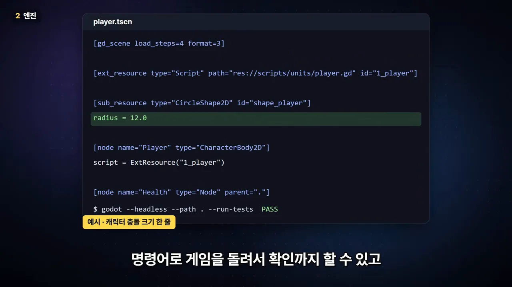
Git은 게임의 세이브 포인트예요
AI는 가끔 실수를 하고, 그게 큰 실수일 때도 있어요. 잘 되던 곳을 망가뜨리기도 하고, 파일을 통째로 지워 버린 사례도 있었대요. 그래서 세 번째 도구가 Git이에요. 영상은 게임의 세이브 포인트에 비유해요. 아래는 이 팀 저장소의 실제 기록이에요. 줄마다 저장한 시점과 무엇을 했는지가 남아 있고, 노랗게 칠한 줄처럼 원하는 지점을 골라 돌아갈 수 있어요.
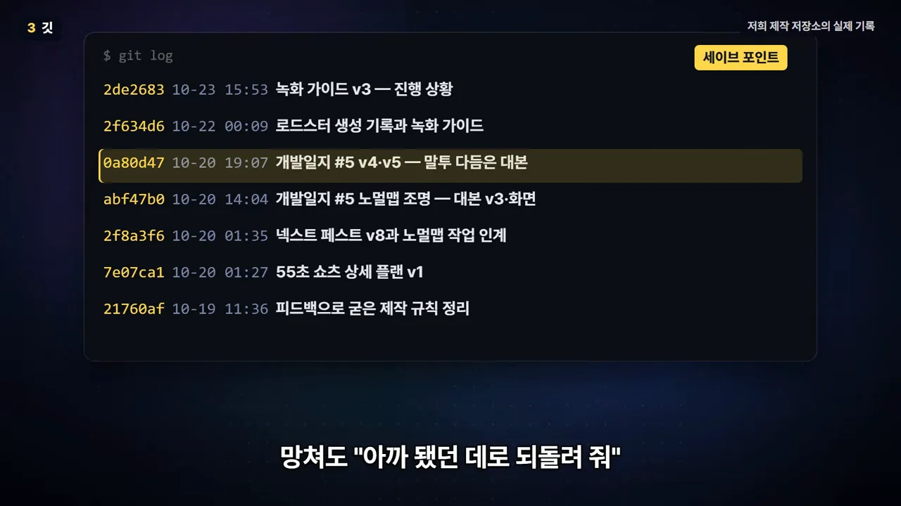
아직 버전 관리를 안 쓰는 사람이 꽤 많다며 꼭 써 보라고 권해요. 화면에 띄운 Godot 설문 2026 수치를 보면, Godot 사용자 전체의 21.2%가 버전 관리를 안 쓰고, 코딩 경험이 없는 사람 중에서는 69.5%가 안 써요. AI로 처음 게임을 만드는 사람일수록 Git이 더 필요하다는 뜻이에요.
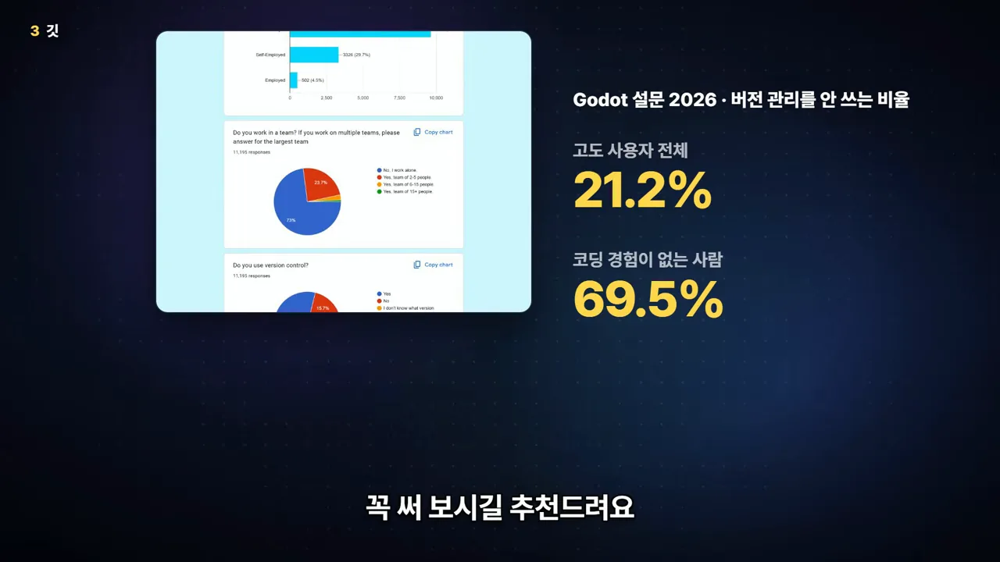
Blender와 Aseprite로 AI 느낌 지우기
네 번째는 그림과 모델을 만드는 도구예요. 3D는 Blender, 도트는 Aseprite를 써요. 영상은 이 둘이 AI 느낌을 지우는 데 큰 도움이 된다고 해요.
Blender: AI가 직접 조작하는 3D 도구
Blender는 무료이고, 앞에서 본 MCP로 AI가 직접 조작할 수 있어요. 이 팀도 작은 소품은 말로 시켜서 만들고 고쳤대요. 아래 화면 오른쪽 위에 'AI가 MCP로 만든 블렌더 건물'이라고 적힌 2층 건물이 그 예예요.
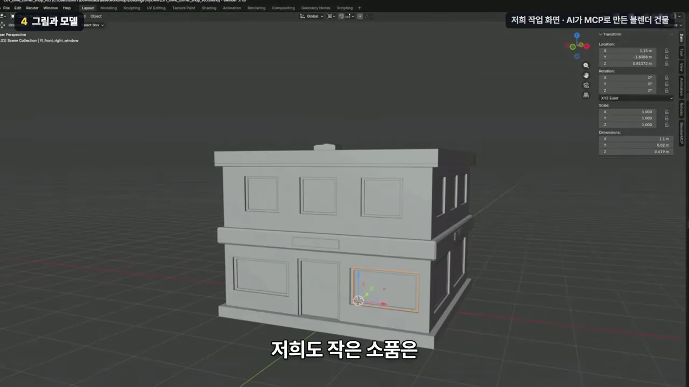
Aseprite: 사거나, 직접 빌드하거나
Aseprite는 20달러에 한 번 사면 끝이에요. 돈을 아끼고 싶다면 AI에게 공개된 소스 코드로 직접 만들어 달라고 해도 돼요. 공식적으로 허락된 방법이고, 그렇게 만든 프로그램으로 그린 그림은 상업용 게임에 써도 돼요. 안 되는 건 그 프로그램을 남에게 나눠 주는 것 하나예요. 아래 공식 FAQ 화면에서 노란 테두리가 그 대목이에요.
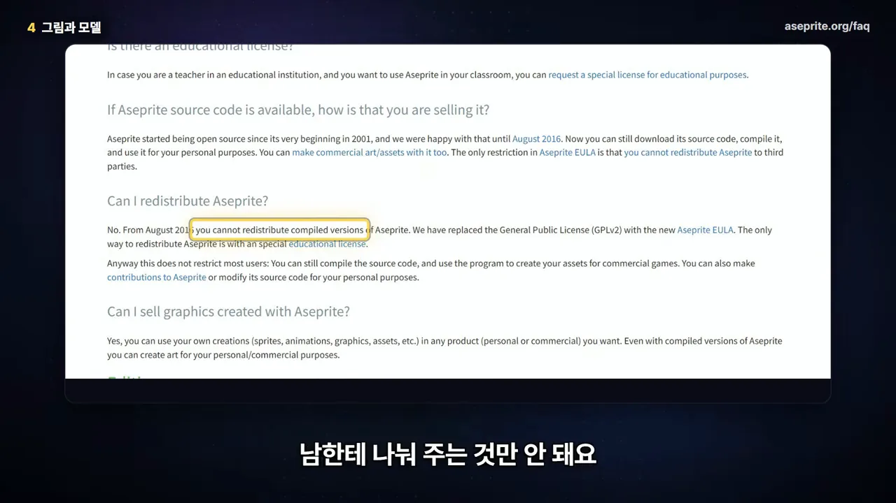
도트 애니메이션은 사람과 AI가 나눠서
Aseprite도 스크립트로 움직일 수 있어서, 프레임 내보내기 같은 귀찮은 일은 AI에게 맡겨요. AI가 도트를 못 찍는 건 아니지만 전부 찍게 하면 실수가 생겨요. 특히 애니메이션에서요. 아래는 Astra에게 팔 애니메이션을 찍어 보라고 했을 때 나온 다섯 프레임이에요. 팔에 관절이 없이 매끈한 파이프처럼 휘어 있어요.
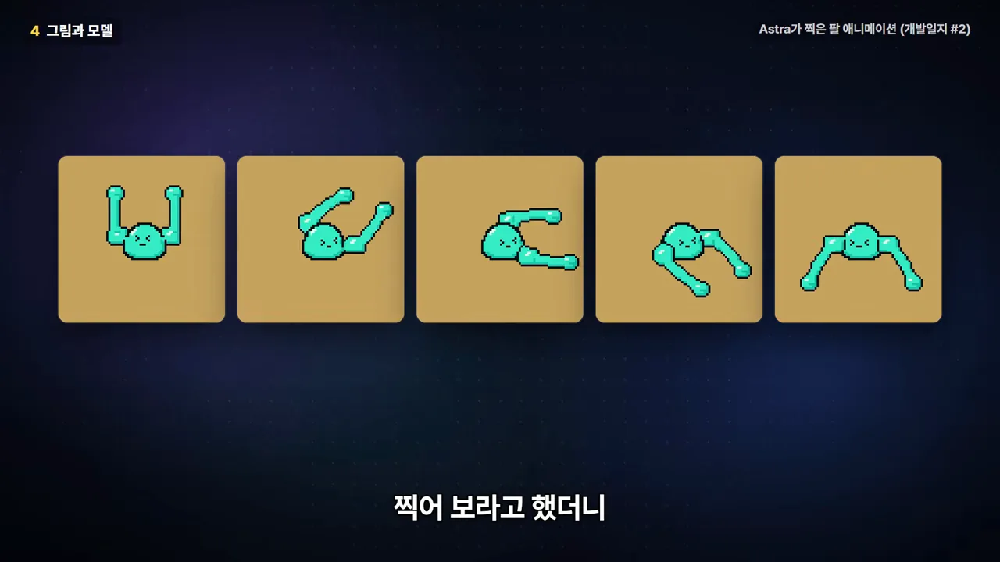
그래서 일을 나눴어요. 파트너가 스케치를 그리고, AI는 그 스케치를 여러 프레임으로 늘리는 프로그램을 짜고, 마지막은 손으로 고쳤어요. 아래 그림이 그 순서예요.
결과가 아래 시트예요. 여덟 줄에 열두 프레임씩 팔 동작이 이어져 있고, 앞에서 본 파이프 같은 팔과 달리 모양이 고르게 바뀌어요.
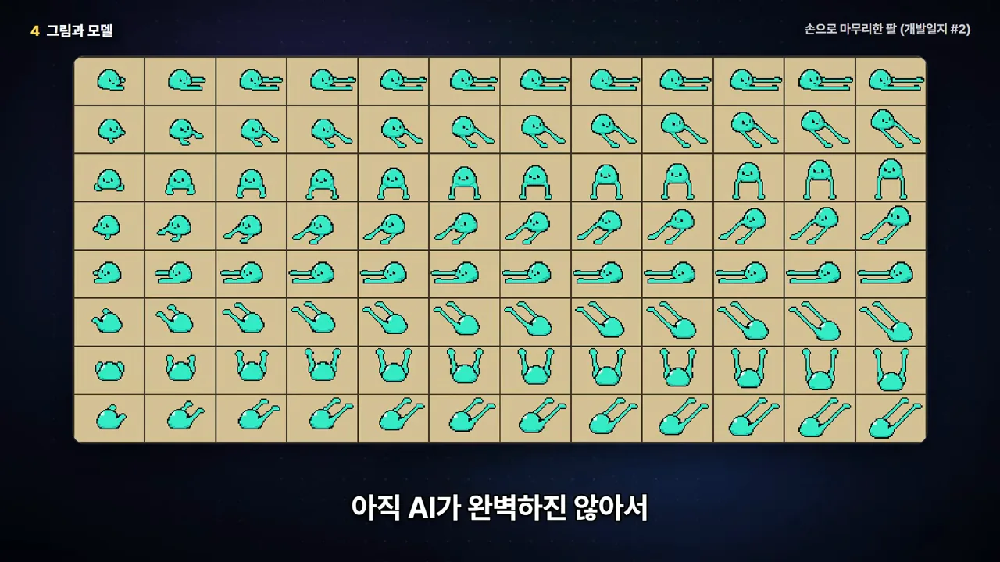
생성 서비스와 소리, 그리고 도구 지도
다섯 번째는 꼭 필요하진 않지만 있으면 시작이 빨라지는 도구들이에요. 3D 모델이나 도트를 만들어 주는 생성 서비스죠.
3D 생성: 글이나 그림 한 장으로 모델을
3D는 글이나 그림 한 장만 넣으면 모델을 만들어 주는 서비스가 많아요. 영상은 Tripo, Meshy, Rodin을 들고, 국내에선 'VARCO'도 있다고 해요. 대부분 무료 크레딧을 주니 한번 써 보라고 권해요. 아래는 Tripo 웹 화면에서 만든 고양이 전사 모델이에요. 왼쪽 위 작은 그림 한 장을 넣고 가운데 3D 모델을 얻었어요.
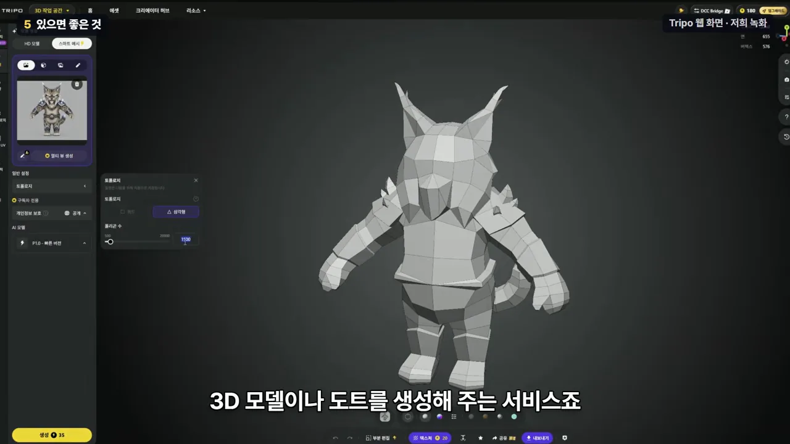
도트 생성: PixelLab
도트는 PixelLab을 써요. 캐릭터를 방향별로 그려 주고 걷는 애니메이션까지 뽑아 줘요. 화면에 보이는 PixelLab 기능 목록에는 Animation(원클릭 애니메이션), Rotation(4·8방향), Style & Editing, Environments, UI(User Interface) Elements가 있어요.
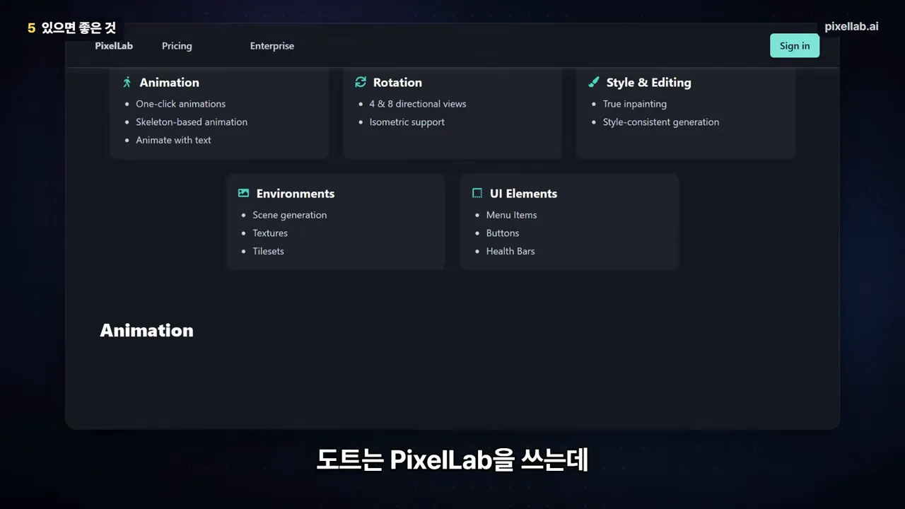
둘 다 시작은 정말 빠르지만 결과를 그대로 쓰긴 어려워요. PixelLab은 방향마다 캐릭터가 조금씩 달라지고, 3D 모델은 폴리곤을 줄이고 방향을 맞춰야 하거든요. 그래서 마무리는 결국 앞에서 말한 Blender와 Aseprite로 해요.
Steam에는 AI 사용을 밝혀야 해요
이렇게 생성한 그림을 게임에 넣으면 Steam에 AI를 썼다고 밝혀야 해요. 코딩을 도운 건 안 밝혀도 되지만, 게임에 들어가는 그림이나 소리는 밝혀야 해요. 화면에 띄운 Game Developer 기사 제목도 Valve가 Steam의 AI 공개 규칙을 손봤다는 내용이에요. 부제는 개발 효율을 위한 AI 도구는 밝히지 않아도 된다고 요약해요.
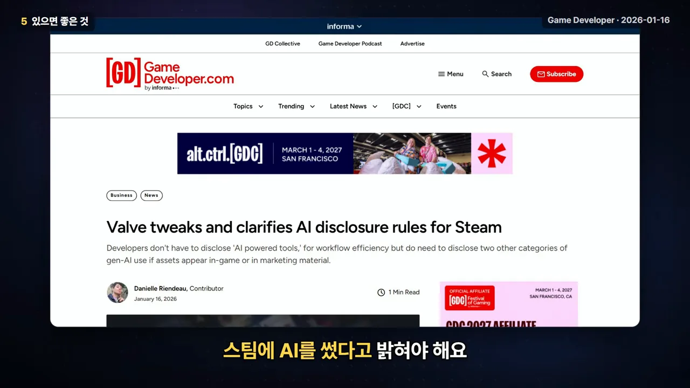
소리: ElevenLabs
마지막은 ElevenLabs예요. 대사를 넣으면 성우처럼 읽어 주고, 소리를 글로 설명하면 효과음도 만들어 줘요. 주의할 건 라이선스예요. 무료로 만든 소리는 상업적으로 못 쓰고, 나중에 유료로 바꿔도 예전에 만든 소리까지 풀리진 않는대요. 아래 요금 화면에서 왼쪽 Free 칸이 그 무료 플랜이에요.
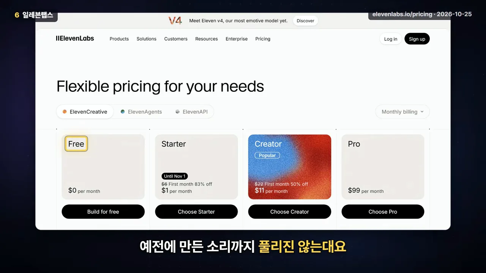
한 장으로 보는 도구 지도
영상은 오늘 소개한 도구를 여섯 칸으로 묶어 보여 줘요. 1 하네스(Claude, ChatGPT), 2 엔진(Godot, Unity, Unreal), 3 버전 관리(Git), 4 그림·모델(Blender, Aseprite), 5 생성 AI(3D·도트 생성 서비스), 6 소리(ElevenLabs)예요.
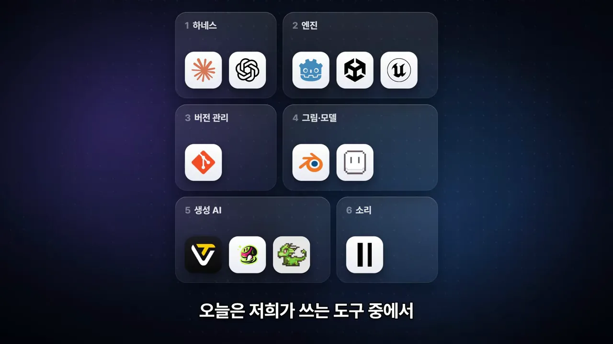
영상은 AI 덕분에 예전엔 엄두도 못 냈던 게임을 만들고 있다는 말로 끝나요. 처음의 원칙처럼 AI를 도구로 잘 쓰자는 당부예요.